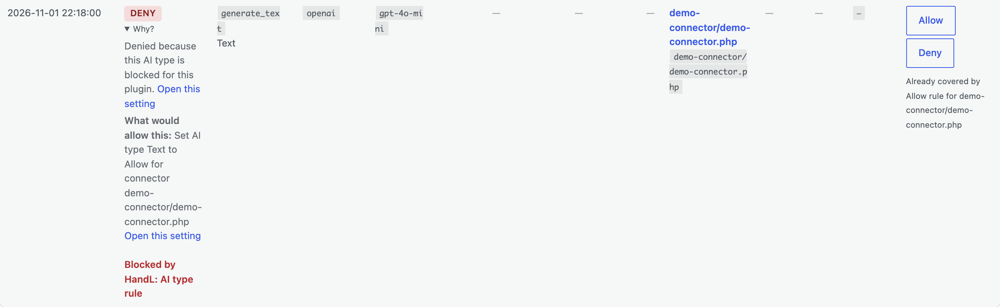
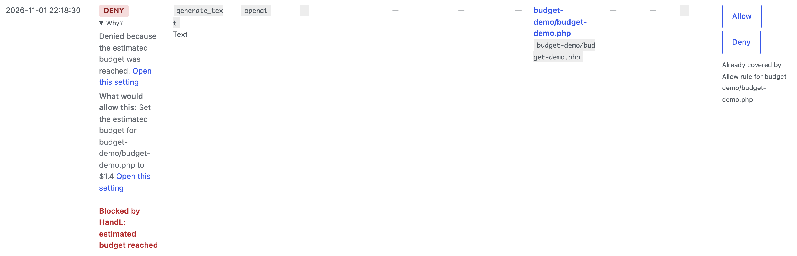
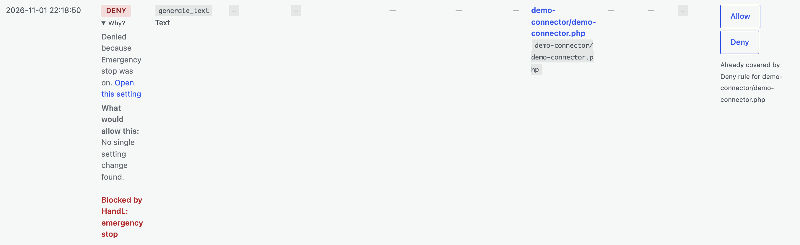
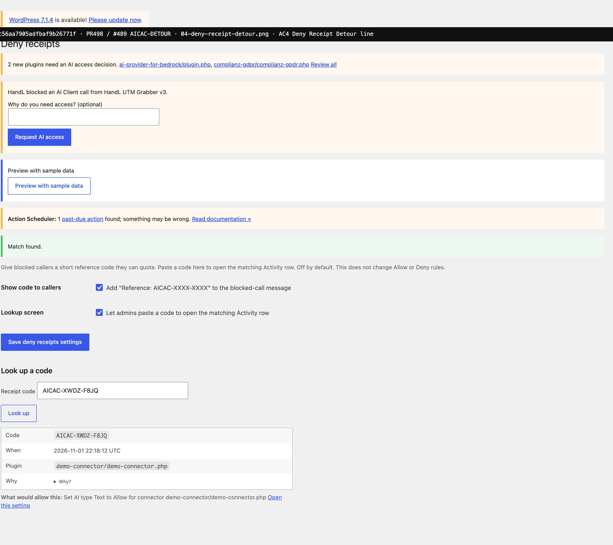
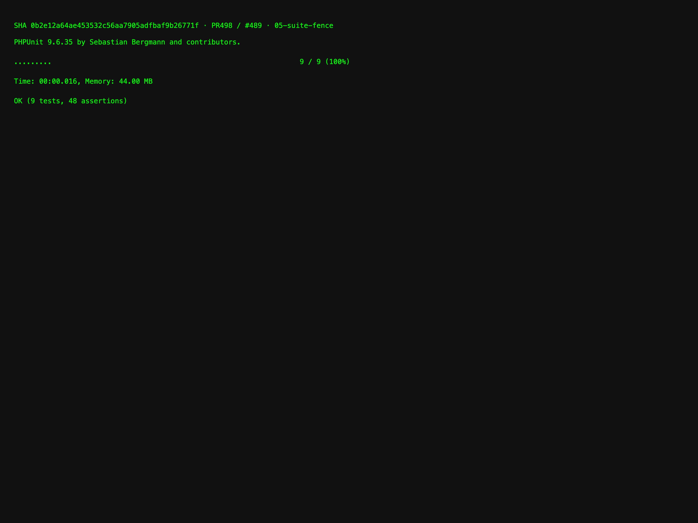

Headless Chrome against live local WordPress admin on handl-sandbox at force-asserted plugin checkout SHA 0b2e12a. Activity captures expand Why? and assert .handl-aicac-detour text before screenshot (not local composed stubs).




